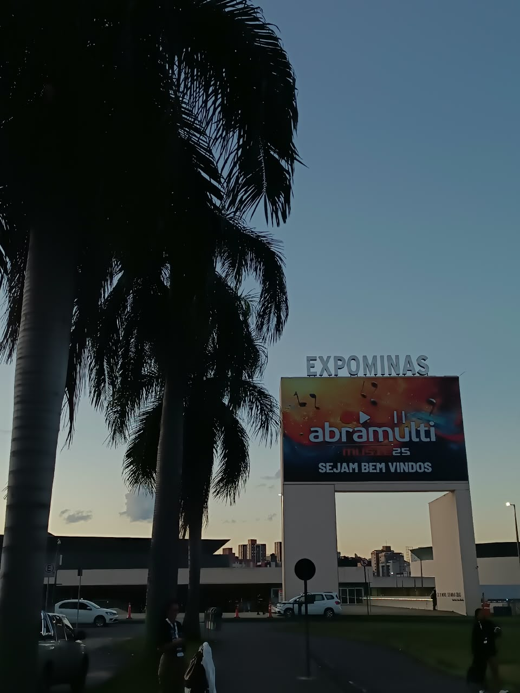

Comunicação
Transmitir ideias com clareza, adaptar mensagens ao público e contribuir para interações positivas.
Comunicação, criatividade e relacionamento para transformar ideias em experiências que aproximam pessoas e marcas.
Sou formada em Relações Públicas, estou finalizando uma pós graduação em comunicação corporativa e transparência e sou movida pela curiosidade, pelo aprendizado contínuo e pela comunicação como ferramenta de conexão.
Ao longo da minha trajetória em uma startup, acompanhei o crescimento de uma área da empresa, iniciada com 3 pessoas, para mais de 70 colaboradores, conquistando autonomia para contribuir com a criação dos processos, alinhamentos e iniciativas de comunicação.
Essa experiência contribuiu com meus conhecimentos sobre Comunicação Interna e Corporativa, área na qual busco me aprofundar e migrar, unindo minha formação, vivência profissional, criatividade e força de vontade.
Acredito que comunicar é mais do que informar: é aproximar pessoas, fortalecer vínculos e construir conexões.
Competências que ajudam a transformar boas ideias em comunicação relevante.
Transmitir ideias com clareza, adaptar mensagens ao público e contribuir para interações positivas.
Construir conexões, compreender necessidades e valorizar a experiência de cada pessoa.
Explorar referências e desenvolver ideias para conteúdos e experiências envolventes.
Planejar atividades, acompanhar demandas e manter o foco nas prioridades.
Colaborar, compartilhar ideias e contribuir para objetivos construídos em conjunto.
Buscar novos conhecimentos, receber feedbacks e desenvolver habilidades constantemente.
Exemplos de materiais de comunicação interna desenvolvidos para informar, orientar e aproximar pessoas por meio de uma comunicação visual clara, criativa e estratégica.
Exemplo de comunicação visual para compartilhar informações, mensagens e conteúdos relevantes com o público interno.
Visualizar PDFModelos de materiais para orientar equipes, apresentar processos e facilitar o acesso a informações do dia a dia.
Visualizar PDFExemplo de material estruturado para apresentar informações, explicar etapas e tornar a comunicação mais acessível e organizada.
Visualizar PDFAlgumas experiências vão além das palavras. São oportunidades de conhecer pessoas, compartilhar ideias e enxergar novas possibilidades.

Eventos e ativações mostram como criatividade, entretenimento e comunicação podem criar momentos marcantes e aproximar marcas de pessoas.

Acompanhar e planejar é uma oportunidade de conhecer novas estratégias, ampliar repertórios e transformar conhecimento em ideias aplicáveis ao dia a dia.

Estar em contato com profissionais e empresas permite trocar experiências, descobrir tendências e construir conexões que enriquecem a trajetória profissional.

Conhecer diferentes regiões amplia a visão de mercado e ajuda a identificar oportunidades de crescimento, inovação e desenvolvimento.

Cada conversa pode trazer uma nova perspectiva. A colaboração e a troca de conhecimentos fortalecem a construção de relações profissionais mais próximas e produtivas.

Planejar recepções e reconhecer conquistas também faz parte da jornada. Cada etapa representa dedicação, aprendizado e motivação para continuar construindo novos caminhos.

As ativações transformam os eventos em experiências memoráveis e interativas, deixando de lado a exposição passiva para engajar o público de forma direta. Elas são fundamentais para fortalecer a conexão emocional entre a marca e os participantes.
Quer conhecer melhor meu trabalho ou conversar sobre oportunidades? Entre em contato comigo!